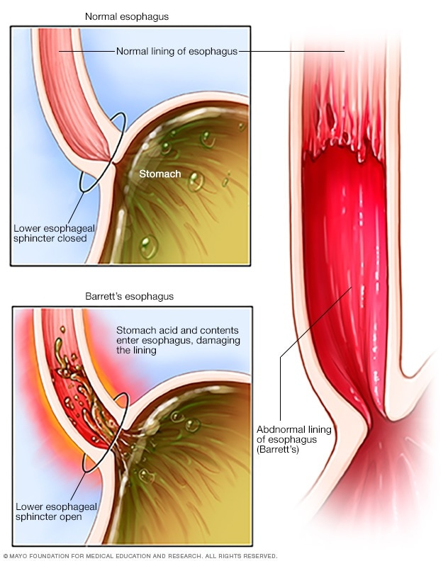

Barrett's Esophagus

SYMPTOMS:
The development of Barrett's esophagus is most often attributed to long-standing GERD, which may include these signs and symptoms:
- Frequent heartburn and regurgitation of stomach contents
-
Difficulty swallowing food
-
Less commonly, chest pain
Curiously, approximately half of the people diagnosed with Barrett's esophagus report little if any symptoms of acid reflux. So, you should discuss your digestive health with your doctor regarding the possibility of Barrett's esophagus.
CAUSES:
- The exact cause of Barrett's esophagus isn't known. While many people with Barrett's esophagus have long-standing GERD, many have no reflux symptoms, a condition often called "silent reflux."
-
Whether this acid reflux is accompanied by GERD symptoms or not, stomach acid and chemicals wash back into the esophagus, damaging esophagus tissue and triggering changes to the lining of the swallowing tube, causing Barrett's esophagus.
DIAGNOSIS:
- Endoscopy is generally used to determine if you have Barrett's esophagus.
-
A lighted tube with a camera at the end (endoscope) is passed down your throat to check for signs of changing esophagus tissue. Normal esophagus tissue appears pale and glossy. In Barrett's esophagus, the tissue appears red and velvety.
TREATMENT
- Treatment for Barrett's esophagus depends on the extent of abnormal cell growth in your esophagus and your overall health